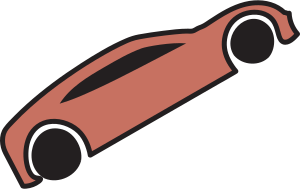
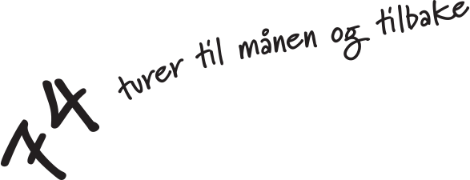
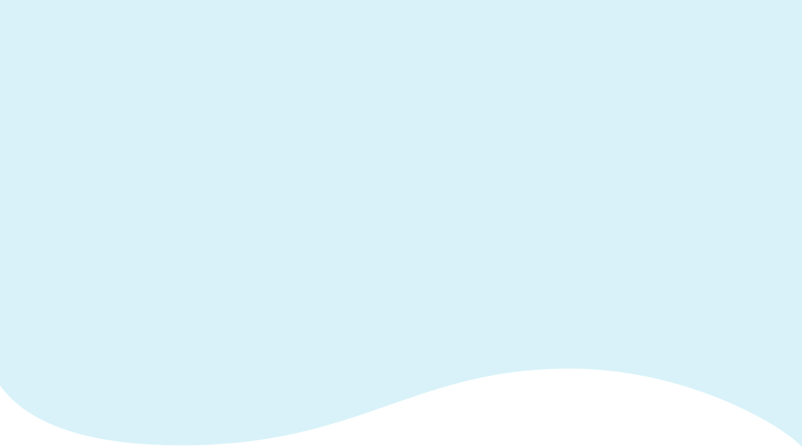
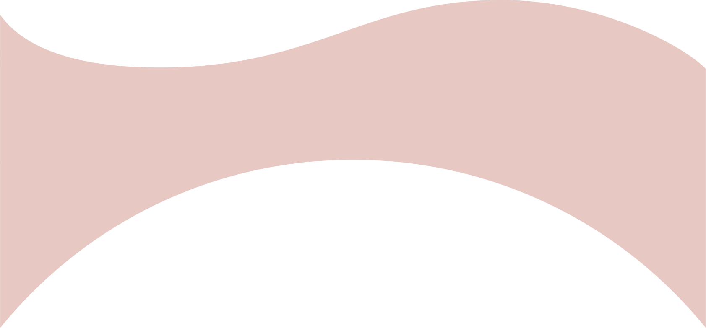
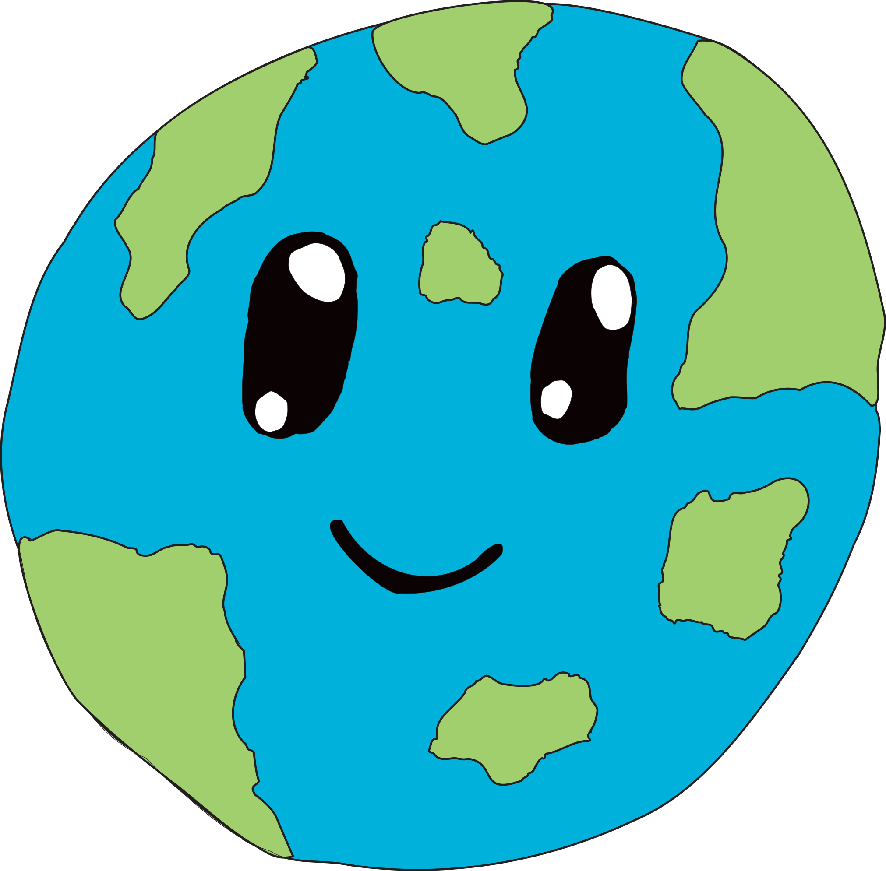
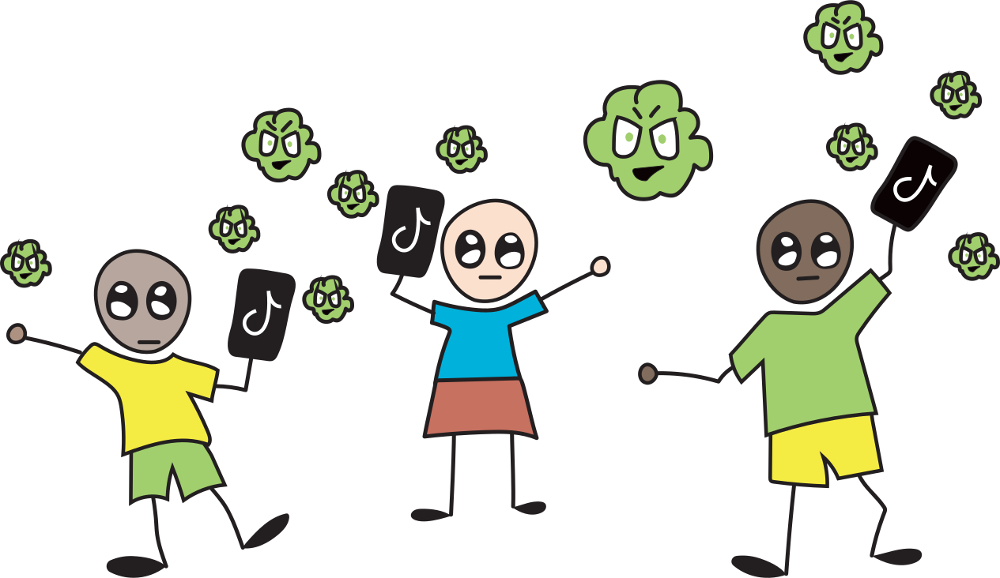

Hvis 1,1 billioner brukere bruker tiktok i
fem minutter, tilsvarer det:





Slett unna
e-poster du
ikke trenger
Unngå å bytte ut
telefonen din ofte
(det fører til mye
e-avfall)
Koble fra strømmen
når du ikke bruker
enhetene
dine
Reduser
skjermtiden
din og bruk
heller mer
tid ute.
(les en
bok, gå
ut og
lek,
gå en tur)
Reduser
lysstyrken
på skjermen din
